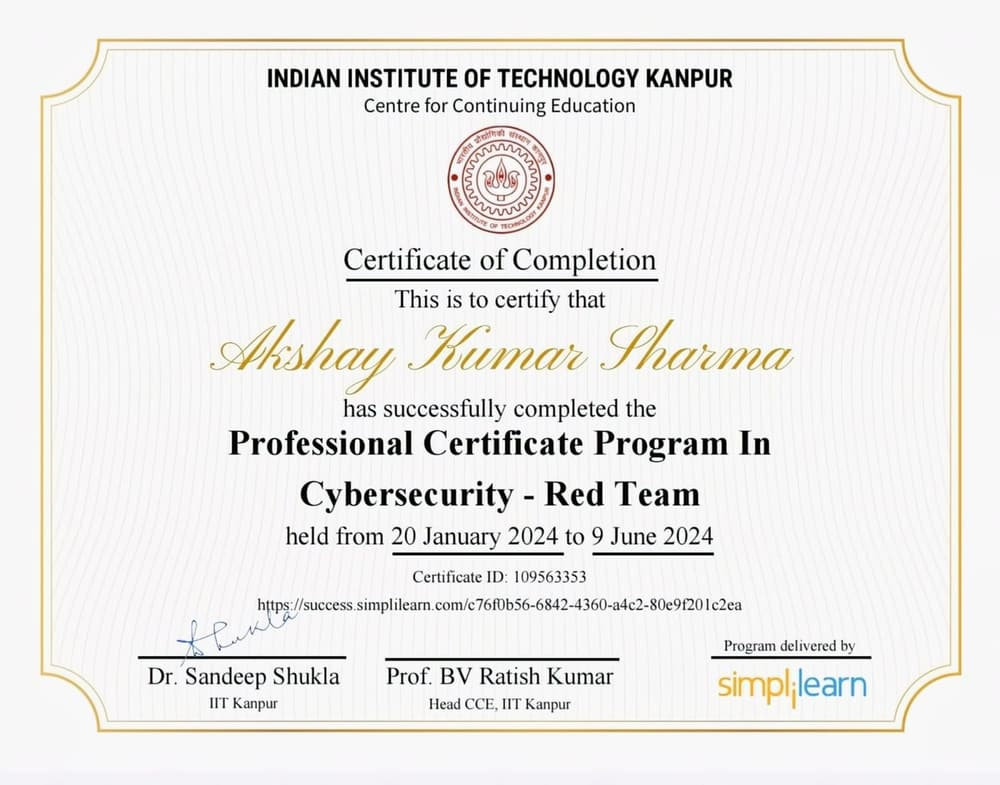
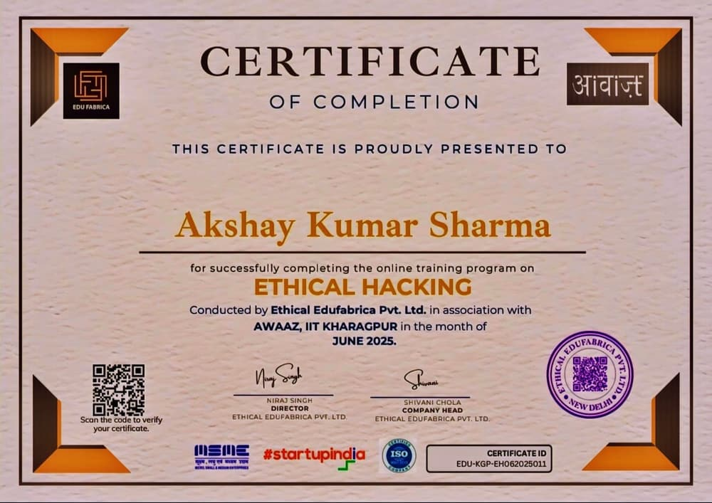
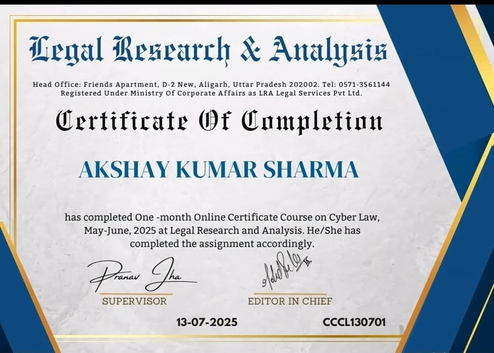

Akshay Kumar Sharma
Cyber Security Educator | Researcherसाइबर सुरक्षा शिक्षक | शोधकर्ता
“Educating People. Advancing Cyber Awareness. Building a Safer Digital India.लोगों को शिक्षित करना। साइबर जागरूकता बढ़ाना। एक सुरक्षित डिजिटल भारत बनाना।”
I work to make cybersecurity knowledge accessible, promote responsible digital behavior, and help people better understand online threats and digital safety.मैं साइबर सुरक्षा की जानकारी को सुलभ बनाने, ज़िम्मेदार डिजिटल व्यवहार को बढ़ावा देने और लोगों को ऑनलाइन खतरों व डिजिटल सुरक्षा को बेहतर समझने में मदद करने का काम करता हूँ।
- 10Cyber awareness guidesसाइबर जागरूकता गाइड
- 10Quizzes with certificatesसर्टिफ़िकेट वाले क्विज़
- 200Quiz questionsक्विज़ प्रश्न
- 8Published articlesप्रकाशित लेख
- 2Languages: English and हिन्दीभाषाएँ: English और हिन्दी
Free learning resources available on this website.इस वेबसाइट पर उपलब्ध निःशुल्क सीखने के संसाधन।
Meet Akshay K. Sharmaमिलिए अक्षय के. शर्मा से
Founder | Cybersecurity Educator | Author | Cyber Awareness Trainerसंस्थापक | साइबर सुरक्षा शिक्षक | लेखक | साइबर जागरूकता प्रशिक्षक
Making Cybersecurity Awareness a Mission. Building a Safer Digital India.साइबर सुरक्षा जागरूकता को एक मिशन बनाना। एक सुरक्षित डिजिटल भारत का निर्माण।
Akshay K. Sharma is an Indian Cybersecurity Educator, Author, and Founder of CyberBharat, based in Jaipur, Rajasthan. Driven by a vision of a cyber-safe India, he is dedicated to educating people about online safety, preventing cybercrime, and making cybersecurity awareness accessible to everyone.अक्षय के. शर्मा एक भारतीय साइबर सुरक्षा शिक्षक, लेखक और CyberBharat के संस्थापक हैं, जो जयपुर, राजस्थान में रहते हैं। साइबर-सुरक्षित भारत के विज़न से प्रेरित होकर वे लोगों को ऑनलाइन सुरक्षा के बारे में शिक्षित करने, साइबर अपराध की रोकथाम करने और साइबर सुरक्षा जागरूकता को सबके लिए सुलभ बनाने के लिए समर्पित हैं।
Through awareness sessions, educational initiatives, and collaborations with police, he works towards creating a digitally informed and secure society.जागरूकता सत्रों, शैक्षिक पहलों और पुलिस के साथ सहयोग के माध्यम से वे एक डिजिटल रूप से जागरूक और सुरक्षित समाज बनाने की दिशा में काम करते हैं।
He is also the author of Cyber Security & Ethical Hacking: The Ultimate Hacker Handbook, reflecting his passion for cybersecurity education and knowledge sharing.वे Cyber Security & Ethical Hacking: The Ultimate Hacker Handbook के लेखक भी हैं, जो साइबर सुरक्षा शिक्षा और ज्ञान साझा करने के प्रति उनके जुनून को दर्शाता है।
Read more about meमेरे बारे में और पढ़ेंTo empower every individual with the knowledge to stay safe, aware, and secure in the digital world.हर व्यक्ति को डिजिटल दुनिया में सुरक्षित, जागरूक और संरक्षित रहने के ज्ञान से सशक्त बनाना।
Featured research
Research ideas and questions on cyber security topics. Each entry shows its real status.
Explainable Phishing Email Detection: Showing Users Why an Email Looks Unsafe
A proposed study on whether a phishing checker that explains its warning (for example a mismatched link or a false sense of urgency) helps ordinary users make better decisions than one that only shows a score.
Read moreUrgency and Pressure in Scam Messages: Which Cues Make People Act Too Fast?
A proposed study of the pressure tactics used in scam calls and messages (fear of blocking, arrest, lost money, limited-time offers) and which of them people find most convincing.
Read moreCommon UPI Fraud Patterns Described in Official Public Advisories
A proposed review that organises the UPI and digital payment fraud patterns described in official public advisories into a simple, easy-to-teach classification.
Read moreFeatured projects
Cybersecurity and awareness projects. Status is shown honestly on every entry.
Phishing Email Detection
A project entry focused on identifying phishing emails by examining message content, sender details and links.
View detailsBharat Cyber Shield
A cyber-safety initiative entry under the Bharat Cyber Shield name. The detailed scope is to be confirmed by the owner.
View detailsCyber awareness resources
Plain-language guides in English and Hindi, with official reporting links for India.
Phishing and Fake Websitesफ़िशिंग और नकली वेबसाइट
How fake emails, SMS and websites trick you into giving away logins, money or personal details.नकली ईमेल, SMS और वेबसाइट कैसे आपसे लॉगिन, पैसे या निजी जानकारी हड़प लेते हैं।
Read guideगाइड पढ़ेंUPI and Payment Fraud AwarenessUPI और पेमेंट धोखाधड़ी जागरूकता
Common UPI tricks - fake collect requests, QR code scams and fake refunds - and how to stay safe.UPI की आम ठगियाँ - नकली कलेक्ट रिक्वेस्ट, QR कोड और फ़र्ज़ी रिफ़ंड - और उनसे बचाव।
Read guideगाइड पढ़ेंOTP and Social EngineeringOTP और सोशल इंजीनियरिंग
How attackers manipulate people, not computers - and why an OTP is never meant to be shared.ठग कंप्यूटर नहीं, इंसान को निशाना बनाते हैं - और OTP कभी साझा क्यों नहीं करना चाहिए।
Read guideगाइड पढ़ेंOnline Job and Investment Scamsऑनलाइन नौकरी और निवेश ठगी
Fake work-from-home jobs, task scams and 'guaranteed return' schemes - how to spot them early.फ़र्ज़ी वर्क-फ़्रॉम-होम नौकरी, टास्क स्कैम और 'पक्के रिटर्न' की स्कीमें - इन्हें जल्दी पहचानें।
Read guideगाइड पढ़ेंMy book
Cyber Security & Ethical Hacking: The Ultimate Hacker Handbook
A practical guide to understanding cybersecurity, ethical hacking, online threats, and digital safety. Designed for students, beginners, and aspiring cybersecurity professionals, the book simplifies essential concepts and promotes responsible digital practices.साइबर सुरक्षा, एथिकल हैकिंग, ऑनलाइन ख़तरों और डिजिटल सुरक्षा को समझने के लिए एक व्यावहारिक गाइड। विद्यार्थियों, शुरुआती लोगों और साइबर सुरक्षा में करियर बनाने की चाह रखने वालों के लिए तैयार की गई यह पुस्तक ज़रूरी अवधारणाओं को सरल भाषा में समझाती है और ज़िम्मेदार डिजिटल व्यवहार को बढ़ावा देती है।
Its mission is to make cybersecurity knowledge accessible and contribute to a safer digital India.इसका उद्देश्य साइबर सुरक्षा का ज्ञान सभी के लिए सुलभ बनाना और एक सुरक्षित डिजिटल भारत में योगदान देना है।
Learn Cybersecurity. Understand the Threats. Stay Safe Online.साइबर सुरक्षा सीखें। ख़तरों को समझें। ऑनलाइन सुरक्षित रहें।
Selected achievements
Professional Certificate Program in Cybersecurity - Red Team
Certificate of Completion. Certificate ID: 109563353.

Verify (opens in a new tab)Ethical Hacking (online training program)
Certificate of Completion. Certificate ID: EDU-KGP-EH062025011.

Certificate Course on Cyber Law
Certificate of Completion for a one-month online certificate course on Cyber Law. Certificate No. CCCL130701.

Latest articles
Cybersecurity Is More Than Just a Strong Passwordसाइबर सुरक्षा सिर्फ़ मज़बूत पासवर्ड नहीं है
A strong password helps, but real account safety comes from several habits working together.मज़बूत पासवर्ड मदद करता है, पर अकाउंट की असली सुरक्षा कई आदतों के मेल से बनती है।
Read articleHow to Recognize Common UPI Scamsआम UPI ठगियों को कैसे पहचानें
Fake collect requests, QR code tricks and 'refund' calls: the patterns behind common UPI fraud.नकली कलेक्ट रिक्वेस्ट, QR कोड की चालें और 'रिफ़ंड' कॉल: UPI ठगी के पीछे के पैटर्न।
Read articleUnderstanding Social Engineeringसोशल इंजीनियरिंग को समझें
Why attackers target people instead of computers, and how to notice when you are being manipulated.हमलावर कंप्यूटर की जगह इंसान को निशाना क्यों बनाते हैं, और हेरफेर को कैसे पहचानें।
Read articleLatest Cyber Crime Newsताज़ा साइबर अपराध समाचार
Headlines collected automatically from official advisories and reputable publishers. Always read the original source.आधिकारिक एडवाइज़री और भरोसेमंद प्रकाशकों से अपने-आप जुटाई गई ख़बरें। हमेशा मूल स्रोत पढ़ें।
Yashvardhan Mishra
Co-Head | Website & Technical Developmentको-हेड | वेबसाइट एवं तकनीकी विकास
Yashvardhan Mishra leads website development and technical implementation, contributing to the platform's functionality, performance, and user experience. With an interest in Python, front-end development, and modern web technologies, he works alongside Founder Akshay K. Sharma to strengthen the platform's digital presence and support its cybersecurity awareness mission.यशवर्धन मिश्रा वेबसाइट डेवलपमेंट और तकनीकी क्रियान्वयन का नेतृत्व करते हैं और प्लेटफ़ॉर्म की कार्यक्षमता, परफ़ॉर्मेंस और यूज़र एक्सपीरियंस में योगदान देते हैं। Python, फ्रंट-एंड डेवलपमेंट और आधुनिक वेब तकनीकों में रुचि रखने वाले वे संस्थापक अक्षय के. शर्मा के साथ मिलकर प्लेटफ़ॉर्म की डिजिटल उपस्थिति को मज़बूत करते हैं और इसके साइबर सुरक्षा जागरूकता मिशन को सहयोग देते हैं।
Together, Building a Safer Digital India.साथ मिलकर, एक सुरक्षित डिजिटल भारत का निर्माण।
LinkedIn (opens in a new tab)Let's work together on a safer digital India
Schools, colleges, organisations and communities are welcome to get in touch about cyber awareness sessions, research collaboration and educational partnerships.